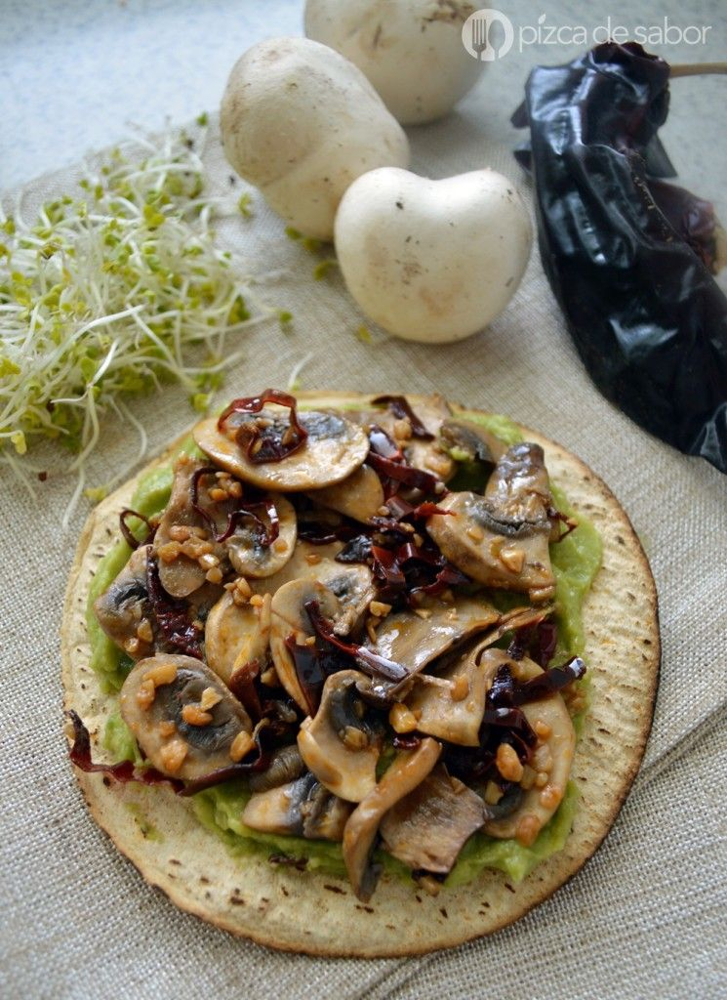
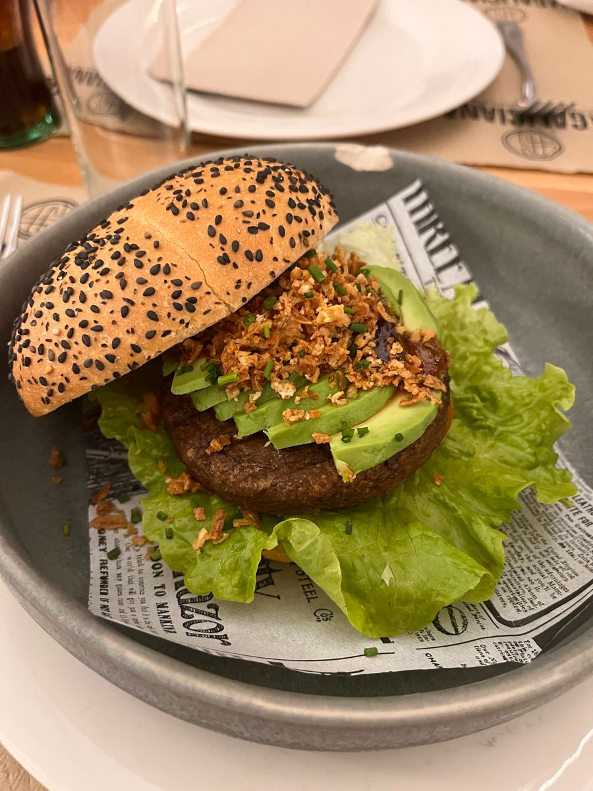
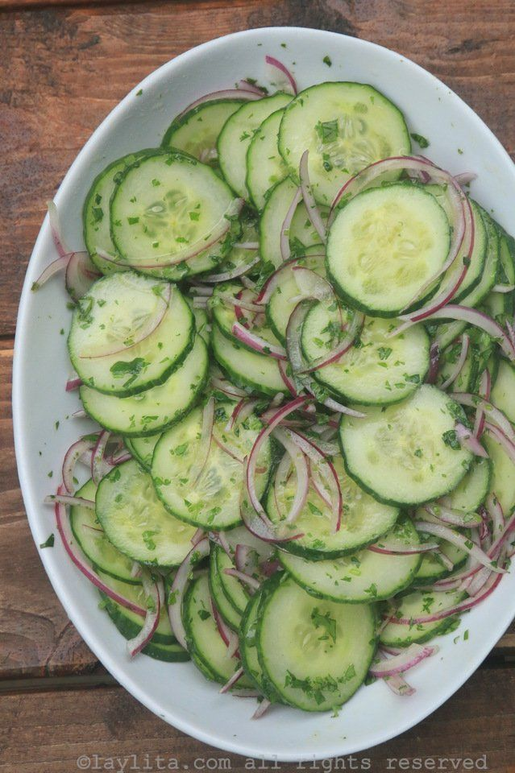
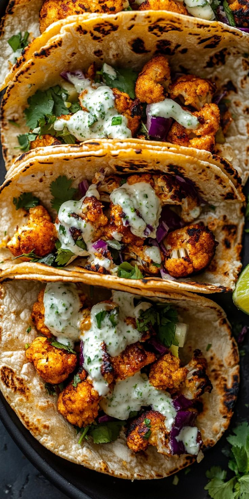
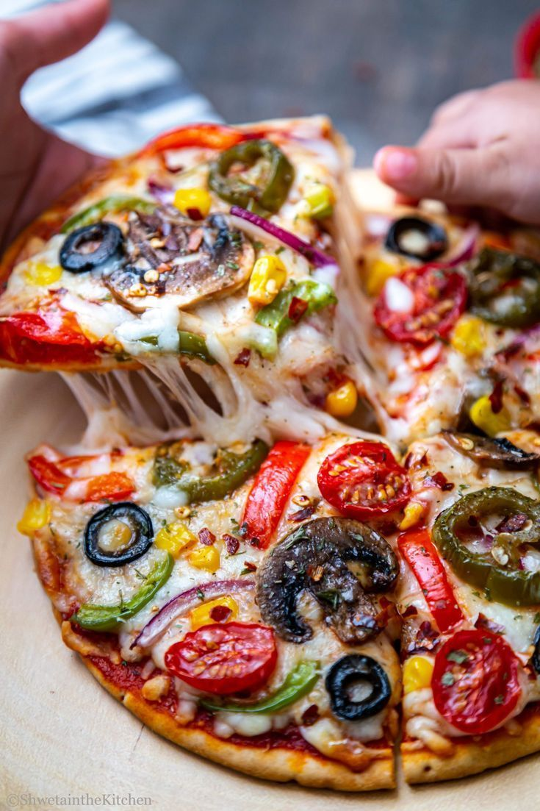
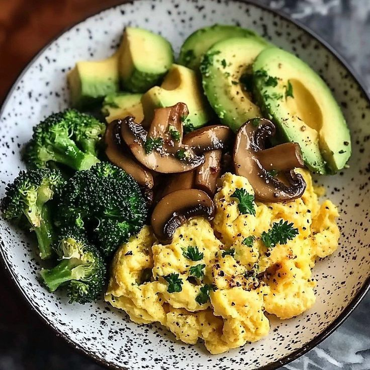

Mi Blog Culinario 2.0
Pastas
Ensaladas
Postres
Vegetariano
Recetas vegetarianas fáciles
15 ideas sabrosas sin carne: nutritivas y sencillas.
← Volver al inicio

Tacos Vegetarianos
Tortillas, frijoles, verduras
Rellenar y servir con salsa.

Hamburguesa de Garbanzo
Garbanzos, especias
Moler, formar y freír/hornear.

Buddha Bowl
Quinoa, verduras asadas
Montar y aliñar.

Curry de Verduras
Verduras, leche de coco
Cocinar todo y servir con arroz.

Tortilla de Verduras
Huevos, verduras (opcional)
Batir, cocinar en sartén.

Stir Fry de Tofu
Tofu, verduras, salsa de soya
Saltear y servir con arroz.